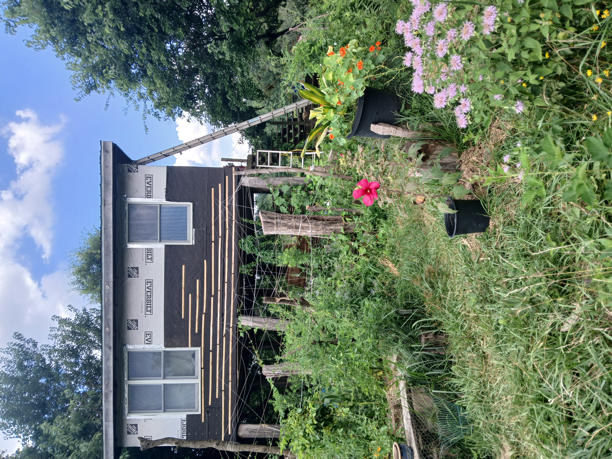

The purpose of this site is to document and collectivize the decision making around the Tree House, an off-grid cabin lifted onto twelve osage posts.
Updates
- Finished most of the electrical rough-in. Run of outlets going along two and a half walls. Still need to run some ceiling wires.
- Bought enough dry-wall for the ceiling.
Still to do Before Winter
- [ ] Insulate Ceiling (Fiberglass or Rockwool Batts 24" width)
- [ ] Insulate Walls
- [ ] Install Stove (vent through floor, or chimney through ceiling)
- [ ]
Hearth
The choice: to use the stove I got for free, or buy a new one. If I use the existing stove, over-large and with a metal box around it, the only real option is to keep it on ground level, and vent hot air upwards.
I like the idea of improvising some kind of a cob-oven type shield enclosure, with sheets of metal, clay, maybe using steel drums.
There could be some kind of insulated box around it, a walk in furnace room, near the center but towards the low end of the house.
Schedule
| Day | Goal |
| -- | -- | -- | | x | x | x | x |
Arc
Gratitudes
- Daniel's Tools
- Dad's help
- Jaxon
Borrowed ladders, borrowed time. Halloween, Kurt. A mobile game where you catch cute animals and make them fight.
Midterms coming up.
A stove. The heart. It wants to beat with a reflection of larger patterns. The meta choice is to do what makes the most sense at the time given the available resources. I wish I had more relational wealth by now.
These are the tracks laid, paths molded, willows of dendrites and electrical storms planted.
Things not said, to be deleted later:
That's kind of a good joke, to have an empty list, meaning there is nothing to be deleted, or that it had been.
The stove heart. Stoned hearth. Is it gifted or taken from a shelf, a box?
Sometimes tinkering, experimental or incremental building isn't the way to go.
The roof needs to go in. Blown Cellulose or Fiberglass Batts Harlequined battes. Bats in the roof.
These problems are surmountable.
- Do I use the stove I have, or buy a new one?
- Is the stove outside or in?
Treehouse Project
A year ago I became the proud but somewhat terrified custodian of the Treehouse at Dancing Rabbit: A one-bedroom off-grid cabin held above the Missouri prairie like a Baba Yaga hut by twelve Osage posts.
It is a beautiful--some would say ridiculous--structure, that the previous proprietor had been renting out as a three-season Bed and Breakfast, despite lacking siding, heating, insulation, or electricity.
My goal is to make it livable, with functional systems, by this winter. Currently, I'm looking for ways to mitigate the summer heat (an 'aluminet' 20x16 heat-shielding shade cloth should be arriving tomorrow to soften the greenhouse effect of the west-facing wall of windows).
This website documents my progress and asks the community for input on various aspects of the project. One of the advantages of living in a cooperative ecovillage, and having smart and ecologically minded friends, is the availability of good advice, and this is my way of asking for it.
Current Projects
Solar System
Planning and installing an off-grid solar setup for basic power needs - lights, phone/laptop charging, and small tools.
Walls & Insulation
Working on siding, insulation, and heating systems to make the treehouse livable through winter.
Gardens
Future landscaping and garden projects around the treehouse.

Let me know if you want to be kept up to date on progress, even if you don't currently have feedback to offer. Thank you in advance for any and all assistance!